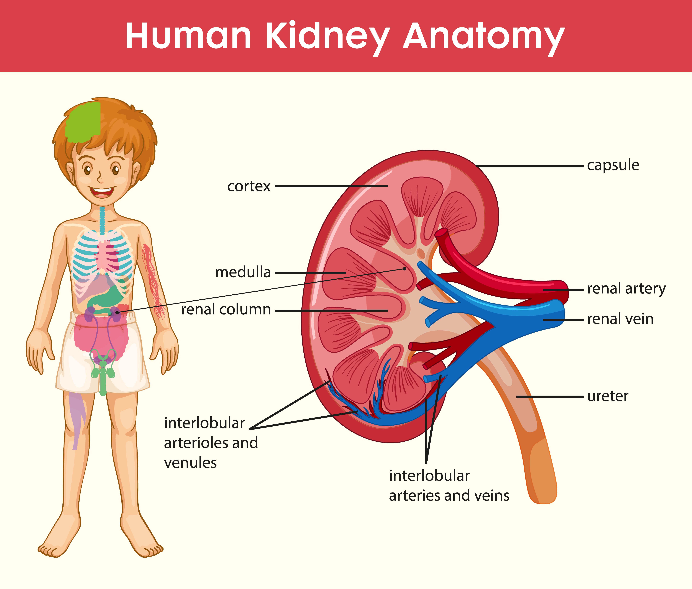

Kidneys are a pair of bean-shaped organs located on either side of the vertebral column in the posterior abdominal cavity.

1.Shape: Bean-shaped
2.Size: ~10–12 cm long, 5–6 cm wide, 3 cm thick
3.Weight: 120–170 grams each
4.Surfaces: